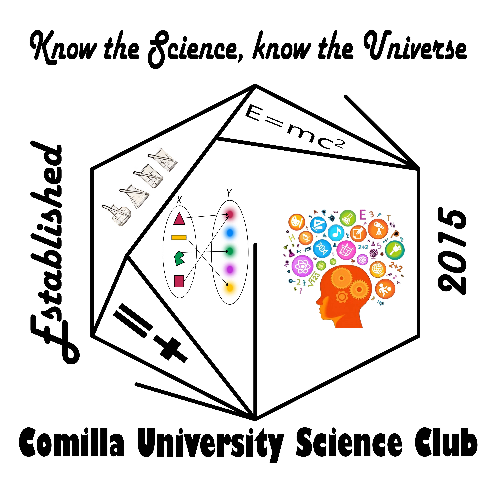

কুমিল্লা বিশ্ববিদ্যালয় সায়েন্স ক্লাব (CoUSC) ২০১৫ সালের ১ সেপ্টেম্বর মাত্র ১৩ জন বিজ্ঞানপ্রেমী শিক্ষার্থীর হাত ধরে প্রতিষ্ঠিত হয়। প্রতিষ্ঠাতা মাসুদ পারভেজ (সবুজ) ২০১৪ সালে SPSB-এর একটি জুনিয়র অলিম্পিয়াডে স্বেচ্ছাসেবক হিসেবে কাজ করার পর অনুপ্রাণিত হয়ে এই ক্লাব প্রতিষ্ঠার উদ্যোগ নেন — বিজ্ঞানভীতি দূর করে শিক্ষার্থীদের মাঝে বিজ্ঞানকে জনপ্রিয়, ব্যবহারিক ও আনন্দদায়ক করে তোলার লক্ষ্যে। CoUSC was founded on September 1, 2015 by just 13 science-loving students. Founding President Masud Parvez (Sobuj) was inspired after volunteering at an SPSB Junior Olympiad in 2014, and united this group to build a platform dedicated to making science popular, practical and joyful — fighting science-phobia at its roots.
সম্পূর্ণ অরাজনৈতিক, অলাভজনক ও শিক্ষার্থী-নেতৃত্বাধীন এই সংগঠনটি আজ ৫৫০ জনেরও বেশি সদস্য নিয়ে কুমিল্লা বিশ্ববিদ্যালয়ের অন্যতম বৃহত্তম ক্লাব। পদার্থবিজ্ঞান, গণিত, আইসিটি, সিএসই, ফার্মেসি, পরিসংখ্যানসহ বিভিন্ন বিভাগের শিক্ষার্থীরা এখানে একত্রিত হন। Completely apolitical, non-profit and self-financed, CoUSC today stands as one of COU's largest clubs with 550+ members from Physics, Math, ICT, CSE, Pharmacy, Statistics and more.
"বিজ্ঞান শুধু পড়ার না, অনুভব করার" — আমাদের প্রতিটি কার্যক্রম এই বিশ্বাসকে বাস্তবে রূপ দেয়।"Science is not just to read — it is to experience." Every activity we run brings this belief to life.
সাম্প্রতিক বৈজ্ঞানিক আবিষ্কার ও মহাকাশ বিষয়ে উন্মুক্ত, চাপমুক্ত আলোচনা — চিন্তার জায়গা যেখানে সবাই কথা বলতে পারে।Open, pressure-free monthly discussions on recent scientific discoveries and cosmic phenomena — a space where everyone can think aloud.
বিস্তারিতSee more →Interstellar, Oppenheimer-এর মতো সায়েন্স ফিকশন মুভি ও ডকুমেন্টারি প্রদর্শন — প্রতিটি প্রদর্শনীর পরে দলগত বৈজ্ঞানিক বিশ্লেষণ।Screenings of sci-fi classics like Interstellar and Oppenheimer, followed by interactive group scientific analysis sessions.
বিস্তারিতSee more →মাসিক বিজ্ঞান কুইজ ও ট্রিভিয়া প্রতিযোগিতা — তাৎক্ষণিক মেধা ও বৈজ্ঞানিক জ্ঞান যাচাইয়ের মজার প্ল্যাটফর্ম।Monthly science quizzes and trivia competitions — a fun platform to test spontaneous intelligence and scientific knowledge.
বিস্তারিতSee more →বিজ্ঞান বই ও গবেষণাপত্র পাঠ ও বিশ্লেষণ। উল্লেখযোগ্য: Rachel Carson-এর "Silent Spring" ও "Antibiotic Resistance" বিষয়ক সেশন।Reading and analyzing science books and research papers. Notable sessions include Rachel Carson's "Silent Spring" and Antibiotic Resistance.
বিস্তারিতSee more →উচ্চতা থেকে ফেলা কাঁচা ডিমকে রক্ষার জন্য কাঠামো তৈরি — মাধ্যাকর্ষণ, বায়ু প্রতিরোধ ও momentum-এর ব্যবহারিক প্রয়োগ।Build structures to protect a raw egg dropped from height — applying gravity, air resistance and impulse-momentum in practice.
বিস্তারিতSee more →Meade টেলিস্কোপে রাতের আকাশ পর্যবেক্ষণ — চন্দ্রগ্রহণ, শনির বলয়, বৃহস্পতির চাঁদ দেখার অনন্য অভিজ্ঞতা। বিজ্ঞান অনুষদের ছাদে আয়োজিত।Nighttime stargazing using Meade telescopes on the Science Faculty roof — lunar eclipses, Saturn's rings and Jupiter's moons.
বিস্তারিতSee more →কুমিল্লা অঞ্চলের সবচেয়ে বড় বিজ্ঞান উৎসব। ২০২৪-এর ২য় সংস্করণে ২,৫০০+ অংশগ্রহণকারী, ৭৬টি প্রজেক্ট স্টল, Soccer BOT, ৪MT Presentation ও বৈজ্ঞানিক ফটোগ্রাফি প্রতিযোগিতা।The largest science festival in Cumilla region. The 2024 edition saw 2,500+ participants, 76 project stalls, Soccer BOT, 4MT Presentations and photography contests.
বিস্তারিতSee more →জুলাই ২০১৭ থেকে প্রকাশিত নিজস্ব বিজ্ঞান সাময়িকী — বৈজ্ঞানিক প্রবন্ধ, গবেষণা সারসংক্ষেপ ও সায়েন্স ফিকশন প্রকাশের প্রধান প্ল্যাটফর্ম।Published since July 2017 — the premier platform for scientific essays, research summaries and science fiction in Bengali.
বিস্তারিতSee more →Arduino প্রোগ্রামিং, সার্কিট ডিজাইন ও রোবট তৈরির হাতে-কলমে প্রশিক্ষণ — বিশ্ববিদ্যালয় শিক্ষার্থী ও স্কুলশিক্ষার্থী উভয়ের জন্য।Hands-on training in Arduino programming, circuit design and robot building — for both university students and school children.
বিস্তারিতSee more →স্কুল-কলেজে হাতে-কলমে পরীক্ষণ প্রদর্শন। কুমিল্লা জিলা স্কুল, সীমান্ত রক্ষী স্কুল, গভর্নমেন্ট ল্যাবরেটরি হাই স্কুলসহ ৭০০+ শিক্ষার্থীকে অনুপ্রাণিত করা হয়েছে।Hands-on experiment demonstrations at schools. Inspired 700+ students across Cumilla Zilla School, Border Guard School, Govt. Laboratory High School and more.
বিস্তারিতSee more →BSTI কুমিল্লা অফিসের Chemistry, Microbiology ও Metrology Lab পরিদর্শনসহ বিভিন্ন শিল্প প্রতিষ্ঠানে বাস্তব বিজ্ঞান অভিজ্ঞতা।Real-world science experience including visits to BSTI Cumilla's Chemistry, Microbiology and Metrology labs and other institutions.
বিস্তারিতSee more →Bangladesh Astronomical Association-এর Apex Astro-Olympiad ২০২৫-এর কুমিল্লা জেলা পর্ব পরিচালনা — ২০০+ শিক্ষার্থী অংশগ্রহণ। নিয়মিত গণিত ও বিজ্ঞান অলিম্পিয়াডও আয়োজিত।Hosted the Cumilla district round of Apex Astro-Olympiad 2025 — 200+ students. Regular Math and Science Olympiads also organized.
বিস্তারিতSee more →পাই ডে, বিশ্ব বিজ্ঞান দিবস, আইনস্টাইন ও স্টিফেন হকিং-এর জন্মদিনসহ বিভিন্ন বৈজ্ঞানিক দিবস উদযাপন।Celebrating Pi Day, World Science Day, Einstein's and Hawking's birthdays and other major days in the science calendar.
বিস্তারিতSee more →তোমার বৈজ্ঞানিক আইডিয়াকে বাস্তবে রূপ দিতে ক্লাব ফান্ড, স্পন্সর ও প্রতিষ্ঠানের সাথে যোগাযোগে পূর্ণ সহযোগিতা। রোবট 'সিনা' এরই ফসল।Full club support to turn your scientific idea into reality — from funding to institutional connections. Robot 'Sina' was born here.
বিস্তারিতSee more →TEDxCoU পার্টনারশিপ, শীতবস্ত্র বিতরণ, বৃক্ষরোপণ, ক্যাম্পাস পরিষ্কার অভিযান, সায়েন্টিফিক ভিডিও কনটেস্ট, পোস্টার প্রেজেন্টেশন ও আরও অনেক আয়োজন।TEDxCoU partnership, winter cloth distribution, tree plantation, campus clean-ups, Scientific Video Contest, poster presentations and much more.
সব কার্যক্রম দেখুনSee all activities →"We don't measure success in words — we measure it in robots, festivals, and futures."
জাতীয় বিজ্ঞান ও প্রযুক্তি জাদুঘর কর্তৃক 'গ' শ্রেণির ক্লাব হিসেবে নিবন্ধিত (গ-২৭৯/২০২৫)। বিশ্ববিদ্যালয় স্বীকৃতি ১২ সেপ্টেম্বর ২০১৭।Registered as a Class-C Science Club by NMST (GA-279/2025). University recognition since September 12, 2017.
বিস্তারিতDetails →বাংলাদেশের ৪র্থ হিউম্যানয়েড রোবট — মাত্র ৩৭,০০০ টাকায় দুই মাসে তৈরি। ইংরেজিতে কথা বলতে ও হাত নাড়াতে পারে। BARD লাইব্রেরিতে প্রদর্শিত।Bangladesh's 4th humanoid robot — built in 2 months for BDT 37,000. Can speak English, move its hands and salute. On display at BARD Library.
বিস্তারিতDetails →জাতীয় পর্যায়ে ২য় ও ১০ম স্থান, চট্টগ্রাম অঞ্চলে টানা ২ বার ১ম স্থান। ২০২৩ সালে "Team Voyagers" (সদস্য/অ্যালামনাই) বিশ্ব চ্যাম্পিয়ন শিরোপা অর্জন করেছে।2nd and 10th nationally, 1st in Chittagong region two consecutive years. In 2023, "Team Voyagers" (featuring members/alumni) won the World Championship title.
বিস্তারিতDetails →কুমিল্লার ইতিহাসে সবচেয়ে বড় বিজ্ঞান উৎসব — ২,৫০০+ অংশগ্রহণকারী, ৭৬টি প্রজেক্ট স্টল, ৪৫,০০০ টাকার পুরস্কার। প্রধান বক্তা ছিলেন কিংবদন্তি Prof. Dr. Mohammad Kaykobad।Comilla's largest science event — 2,500+ participants, 76 project stalls, BDT 45,000 prize pool. Chief Speaker: legendary Prof. Dr. Mohammad Kaykobad.
বিস্তারিতDetails →২০২৩ সালে Poster Presentation-এ চ্যাম্পিয়ন ও Science Olympiad-এ রানার-আপ। ২০১৭ সালে ১ম ও ২য় উভয় সংস্করণে সামগ্রিকভাবে ২য় স্থান।2023: Champion in Poster Presentation and Runner-up in Science Olympiad. 2017: 2nd place overall in both the 1st and 2nd JU Science Fests.
বিস্তারিত দেখুনSee details →২০১৭ সাল থেকে নিয়মিত প্রকাশিত বিজ্ঞান সাময়িকী — শিক্ষার্থীদের বিজ্ঞান লেখালেখির অন্যতম প্রধান প্ল্যাটফর্ম।Regularly published since July 2017 — one of the leading platforms for student science writing in the Cumilla region.
বিস্তারিতDetails →Bangladesh Astronomical Association-এর Apex Astro-Olympiad ২০২৫-এর কুমিল্লা জেলা পর্ব সফলভাবে পরিচালনা — ২০০+ শিক্ষার্থী অংশগ্রহণ।Successfully hosted the Cumilla district round of Apex Astro-Olympiad 2025 by Bangladesh Astronomical Association — 200+ participants.
বিস্তারিতDetails →CoUSC-এর প্রাক্তন সদস্যরা আজ বিশ্বের বিভিন্ন প্রান্তে — University of Alabama-তে PhD গবেষণা, মালয়েশিয়ায় মাস্টার্স, Sonali Bank ও Janata Bank-এ IT ও কর্মকর্তা পদে, বিশ্ববিদ্যালয়ে শিক্ষকতায়।CoUSC alumni are today scattered across the globe — PhD research at University of Alabama USA, Masters in Malaysia, IT officers at national banks, and lecturers at universities.
"বিজ্ঞান শুধু মেধাবীদের জন্য নয় — কৌতূহলই একমাত্র যোগ্যতা।""Science is not only for the brilliant — curiosity is the only prerequisite."
তাত্ত্বিক জ্ঞানকে বাস্তবে রূপ দাও — রোবট বানাও, রাসায়নিক পরীক্ষণ করো, টেলিস্কোপে তারা দেখো।Turn theory into reality — build robots, conduct experiments, look at stars through telescopes.
৫৫০+ সদস্যের এই কমিউনিটিতে পাবে কৌতূহলী, স্বপ্নবাজ বন্ধু যারা তোমার মতোই কিছু করে দেখাতে চায়।In this 550+ member community you'll find curious, ambitious friends who share your drive to make a difference.
NASA Space Apps-সহ আন্তর্জাতিক প্রতিযোগিতায় অংশগ্রহণের সুযোগ — কুমিল্লায় বসেই বিশ্বমঞ্চে।Compete in NASA Space Apps and international competitions — reaching the world stage from Cumilla.
Arduino, রোবটিক্স, পাবলিক স্পিকিং, গ্রাফিক ডিজাইন, ভিডিও এডিটিং — সব বিনামূল্যে।Arduino, robotics, public speaking, graphic design, video editing — all free for members.
প্রতিটি নতুন সদস্যের জন্য একজন সিনিয়র মেন্টর, PhD গাইডেন্স ও NST Fellowship সহায়তা।A senior mentor for every new member, PhD guidance and NST Fellowship support throughout your journey.
'বিজ্ঞান কথন'-এ প্রকাশিত হও, অফিশিয়াল সার্টিফিকেট পাও — CV-তে বাড়তি মাত্রা যোগ করো।Get published in Biggyan Kathon, earn official certificates — add meaningful value to your CV.
তোমার বৈজ্ঞানিক আইডিয়া বাস্তবে রূপ দিতে ক্লাব ফান্ড, স্পন্সর ও সংযোগে সম্পূর্ণ সহযোগিতা।Full club support — funding, sponsors and connections — to turn your scientific idea into reality.
সম্পূর্ণ অরাজনৈতিক ও চাপমুক্ত পরিবেশ — শুধু আছে শেখার আনন্দ ও Meritocracy।Completely apolitical and pressure-free — only merit and the joy of learning matter here.
বিজ্ঞানের রাজ্যে তোমার যাত্রা শুরু হোক — কৌতূহলই একমাত্র টিকেট।Your journey to the Kingdom of Science begins here — curiosity is the only ticket you need.